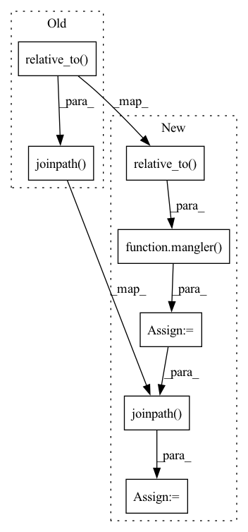

Pattern ID :35274

Before Change
@util.preserve_random_state
def sync(self) -> None:
for path in self.to_sync():
blob_name = self.sync_path.joinpath(path.relative_to(self.base_path))
to_path = self.get_storage_prefix(blob_name)
blob = self.bucket.blob(to_path)
logging.debug(f"Uploading {path} to GCS: {to_path}")
After Change
rank: int = 0,
) -> None:
for path in self.to_sync(selector):
relative_path = path.relative_to(self.base_path)
mangled_relative_path = mangler(relative_path, rank)
mangled_path = self.sync_path.joinpath(mangled_relative_path)
to_path = self.get_storage_prefix(mangled_path)
blob = self.bucket.blob(to_path)
logger.debug(f"Uploading {path} to GCS: {to_path}")
In pattern: SUPERPATTERN
Frequency: 3
Non-data size: 7
Instances
Fragment ID: 100309755
Project Name: determined-ai/determined
Commit Name: 49966efa5fea936d03630d0deb3251f908b5c3e6
Time: 2022-06-14
Author: maksim.kouznetsov@hpe.com
File Name: harness/determined/tensorboard/gcs.py
M Class Name: GCSTensorboardManager
N Class Name: GCSTensorboardManager
M Method Name: sync(4)
N Method Name: sync(1)
M Parent Class: base.TensorboardManager
N Parent Class: base.TensorboardManager
M File Name: harness/determined/tensorboard/gcs.py
N File Name: harness/determined/tensorboard/gcs.py
M Start Line: 34
M End Line: 40
N Start Line: 37
N End Line: 49
'>
Before Change
def sync(self) -> None:
for path in self.to_sync():
shared_fs_path = self.shared_fs_base.joinpath(path.relative_to(self.base_path))
pathlib.Path.mkdir(shared_fs_path.parent, parents=True, exist_ok=True)
shutil.copy(path, shared_fs_path)
def delete(self) -> None:
After Change
rank: int = 0,
) -> None:
for path in self.to_sync(selector):
relative_path = path.relative_to(self.base_path)
mangled_relative_path = mangler(relative_path, rank)
mangled_path = self.shared_fs_base.joinpath(mangled_relative_path)
pathlib.Path.mkdir(mangled_path.parent, parents=True, exist_ok=True)
logger.debug(f"SharedFSTensorboardManager saving {path} to {mangled_path}")
shutil.copy(path, mangled_path)
'>
Fragment ID: 100309753
Project Name: determined-ai/determined
Commit Name: 49966efa5fea936d03630d0deb3251f908b5c3e6
Time: 2022-06-14
Author: maksim.kouznetsov@hpe.com
File Name: harness/determined/tensorboard/shared.py
M Class Name: SharedFSTensorboardManager
N Class Name: SharedFSTensorboardManager
M Method Name: sync(4)
N Method Name: sync(1)
M Parent Class: base.TensorboardManager
N Parent Class: base.TensorboardManager
M File Name: harness/determined/tensorboard/shared.py
N File Name: harness/determined/tensorboard/shared.py
M Start Line: 28
M End Line: 30
N Start Line: 32
N End Line: 42
'>
Before Change
@util.preserve_random_state
def sync(self) -> None:
for path in self.to_sync():
whole_path = self.sync_path.joinpath(path.relative_to(self.base_path))
self.client.put("{}/{}".format(self.container, str(whole_path.parent)), path.name, path)
def delete(self) -> None:
files = self.client.list_files(self.container, self.sync_path)
After Change
rank: int = 0,
) -> None:
for path in self.to_sync(selector):
relative_path = path.relative_to(self.base_path)
mangled_relative_path = mangler(relative_path, rank)
mangled_path = self.sync_path.joinpath(mangled_relative_path)
logger.debug(f"Uploading {path} to Azure: {self.container}/{mangled_path}")
self.client.put(
f"{self.container}/{mangled_path.parent}",
'>
Fragment ID: 100309756
Project Name: determined-ai/determined
Commit Name: 49966efa5fea936d03630d0deb3251f908b5c3e6
Time: 2022-06-14
Author: maksim.kouznetsov@hpe.com
File Name: harness/determined/tensorboard/azure.py
M Class Name: AzureTensorboardManager
N Class Name: AzureTensorboardManager
M Method Name: sync(4)
N Method Name: sync(1)
M Parent Class: base.TensorboardManager
N Parent Class: base.TensorboardManager
M File Name: harness/determined/tensorboard/azure.py
N File Name: harness/determined/tensorboard/azure.py
M Start Line: 30
M End Line: 33
N Start Line: 35
N End Line: 48